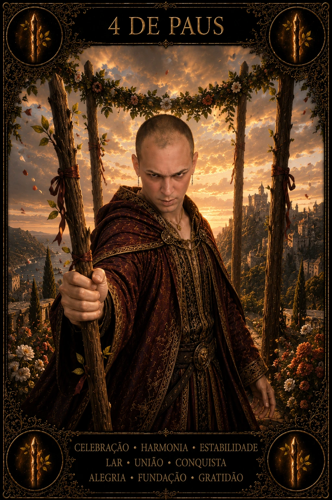

BIBLIOTECA DAS 78 CARTAS · PAUS
4 de Paus no Tarot
O 4 de Paus representa um marco que merece ser reconhecido: chegada, celebração, casa, comunidade e a sensação de que existe chão suficiente para respirar. Sua profundidade não está apenas na festa, mas na base que permite celebrar. Ele pergunta o que foi construído, quem participa dessa construção e como transformar uma conquista pontual em ambiente de pertencimento sustentável.
- celebração
- base compartilhada
- pertencimento
- marco alcançado
- estabilidade viva
- Arcano
- Arcano Menor
- Elemento
- Fogo
- Naipe
- Paus
- Chave
- estrutura e estabilidade
- Orientação
- Direta
SIGNIFICADO E ENERGIA
O que 4 de Paus revela
No dia, a carta favorece encontros, comemorações, conclusão de uma etapa, organização da casa e reconexão com pessoas que oferecem segurança. Também pode ser um lembrete de que produtividade sem reconhecimento esgota. Há valor em marcar transições e permitir que o corpo registre: ‘cheguei até aqui’. Depois, a próxima etapa pode começar com mais presença.
POTENCIAL
Luz
Na luz, o 4 de Paus traz estabilidade sem rigidez, alegria compartilhada e capacidade de criar espaços onde pessoas podem existir com mais confiança. É uma carta de estrutura viva: regras e acordos servem para sustentar celebração, não para controlar cada movimento. Pertencimento cresce quando participação e respeito são reais.
PONTO DE ATENÇÃO
Tensão
Na tensão, pode haver pressão para parecer feliz, necessidade de aprovação do grupo, apego à aparência de harmonia ou resistência a mudanças porque a estrutura atual parece segura. Uma celebração também pode ocultar desigualdades de trabalho e cuidado. A carta convida a perguntar quem sustenta a festa e se todos realmente têm lugar nela.
VÍNCULOS E RECIPROCIDADE
4 de Paus no amor
Amor
No amor, o 4 de Paus pode acompanhar compromisso, convivência, celebrações, apresentação à comunidade ou consolidação de um vínculo. O sentido profundo está em criar segurança emocional e prática juntos. Cerimônia, rótulo ou foto bonita não substituem respeito cotidiano; a base precisa existir nos pequenos acordos.
Relacionamentos
Em família, amizades e comunidade, a carta destaca rituais de pertencimento e redes de apoio. Pode ser momento de reunir pessoas, agradecer ou fortalecer uma tradição saudável. Se houver conflito, o foco é reconstruir condições para convivência digna, não exigir uma harmonia artificial.
VIDA MATERIAL
Carreira e dinheiro
Carreira
Na carreira, representa milestone, entrega concluída, equipe integrada, evento bem-sucedido ou fase de maior estabilidade. É adequado reconhecer o esforço coletivo e documentar o que funcionou. Uma conquista bem encerrada vira processo reutilizável; uma conquista apenas celebrada pode se perder quando a equipe muda.
Dinheiro
No dinheiro, favorece planejamento relacionado a casa, eventos e estabilidade, mas pede atenção a gastos motivados por aparência social. Celebrar não precisa comprometer o orçamento. O melhor uso financeiro da carta é fortalecer aquilo que oferece segurança duradoura e prazer proporcional aos recursos disponíveis.
CAMINHO INTERIOR
Espiritualidade
Espiritualmente, o 4 de Paus fala de sagrado compartilhado: rituais, casa, altar, comunidade e gratidão pelo caminho percorrido. O sagrado não precisa estar distante; pode existir em uma mesa preparada com cuidado, em uma amizade confiável ou no reconhecimento de uma etapa concluída.
LINGUAGEM VISUAL
Símbolos de 4 de Paus
- quatro bastões como portal
- guirlanda de flores
- figuras celebrando
- castelo ou comunidade ao fundo
- espaço aberto de recepção
LEITURA EM CONJUNTO
Combinações com 4 de Paus
Uma combinação amplia perguntas e contexto; ela não transforma possibilidade em destino.
4 de Paus + 4 de Copas
A mesma etapa encontra dois territórios: ação, desejo e criatividade dialoga com afeto, vínculo e imaginação. Observe onde uma dimensão apoia ou contradiz a outra.
4 de Paus + O Imperador
O padrão de 4 ganha uma chave arquetípica em O Imperador; a combinação amplia consciência antes de transformar símbolo em decisão.
4 de Paus + 5 de Paus
A energia de 4 de Paus aponta para 5 de Paus: identifique o aprendizado necessário para que ação, desejo e criatividade avance sem perder medida.
INTEGRAÇÃO
Desafio e conselho
Desafio
O desafio é não confundir estabilidade com imobilidade. Uma boa base deve permitir que as pessoas cresçam. Observe se você está protegendo um espaço que nutre ou apenas repetindo uma forma conhecida por medo de perder pertencimento.
Conselho
Reconheça o que foi construído e agradeça quem participou. Fortaleça a base antes de abrir outra frente. Celebre de modo compatível com sua realidade e use a alegria como combustível para o próximo ciclo, não como obrigação de parecer bem.
PERGUNTA DE REFLEXÃO
Que conquista precisa ser reconhecida — e que base concreta devo fortalecer para que essa alegria não dependa apenas de um momento?
Ação práticaEscolha um marco recente e faça duas coisas: registre o que tornou a conquista possível e realize um gesto simples de celebração ou agradecimento que não ultrapasse seus recursos.
CONTINUE A JORNADA
O Tarot é um universo de 78 vozes
Explore todas as cartas em posição direta ou abra a mesa do Tarot Livre para revelar imagens sem repetição.